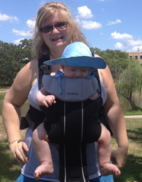

I am a Licensed Professional Counselor with a private practice office one mile north of Texas A&M University.
I offer therapy with adult individuals, couples, families, teens, and play therapy for children. I earned my Masters Degree in the esteemed Counseling Psychology program at John F. Kennedy University.
I am a member of the
Texas Counseling Association
and the
Association for Play Therapists,
and an associate member of the
Texas Association for Marriage and Family Therapists.
I am deeply humbled and rewarded as a therapist at the sublime moments when I facilitate processes of self-discovery and healing.
Whether I am working with adults, couples, whole families, teens, or children, I offer a warm, empathic approach. I believe in the power of acceptance and laughter to heal.
I previously worked with severely emotionally disturbed children.
Then, I served as the Home and Hospital Program Director at the International Center for Attitudinal Healing in Sausalito, California.
I counseled children and families coping with life-threatening illnesses and individuals dealing with bereavement.
In Austin, I worked at MHMR, providing care to clients with multiple diagnoses, including HIV and addictions.
I moved to the Bryan/College Station area to marry my husband, a professor at Texas A&M.
I worked with individuals suffering from severe mental illness as rehabilitation case manager at MHMR in Bryan.
I co-founded Brazos Valley Counseling Services, a non-profit serving under-insured and lower income families in the Brazos Valley.
I worked with children and families, serving as Marriage and Family Therapy Director.
I was featured in an article in Brazos Family magazine.
I serve community in times of disaster.
In response to the San Francisco Area earthquake, I established and coordinated the relief intervention and peer counseling area in an American Red Cross shelter.
I provided support for children and families processing emotional and physical trauma (e.g. loss of dwellings/personal property/pets/loved ones) due to natural disaster.
I provided crisis debriefing for caregivers and first responders to the Oklahoma Federal Building Bombing Disaster.
I helped establish peer crisis counseling for children & teens at elementary, middle, & high schools.